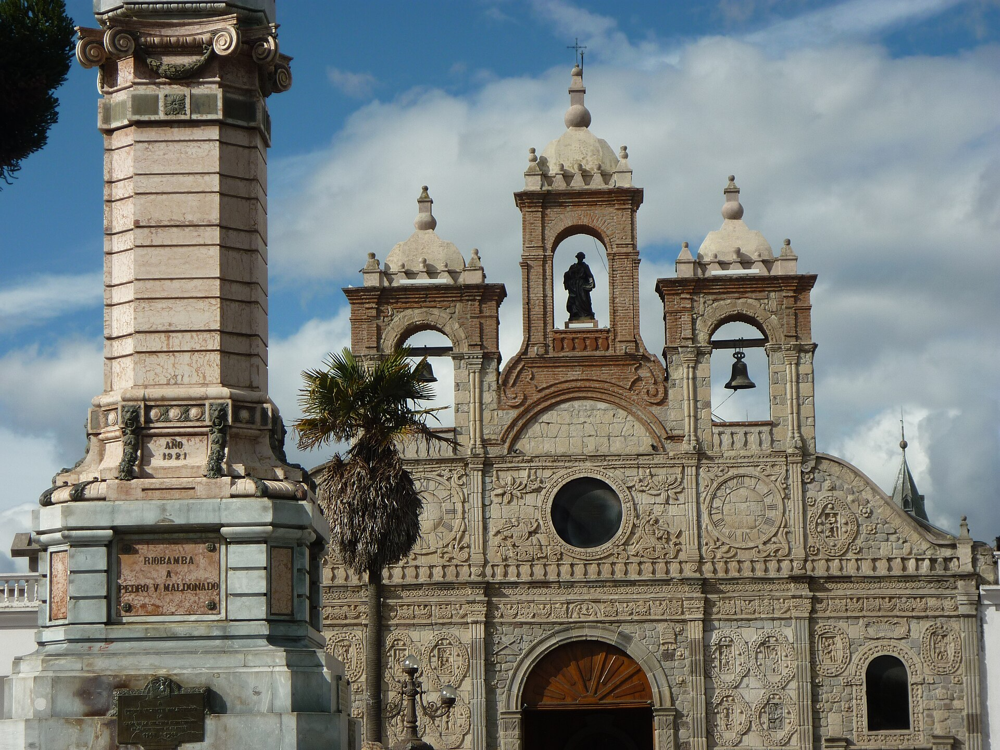

Patrimonio
Una ciudad reconstruida
El terremoto de 1797 destruyó la Riobamba antigua. La ciudad se levantó de nuevo en la llanura de Tapi, y la fachada barroca de su Catedral se armó con las piedras rescatadas de las ruinas. Se sigue leyendo en ella el trabajo de los canteros del siglo XVII.